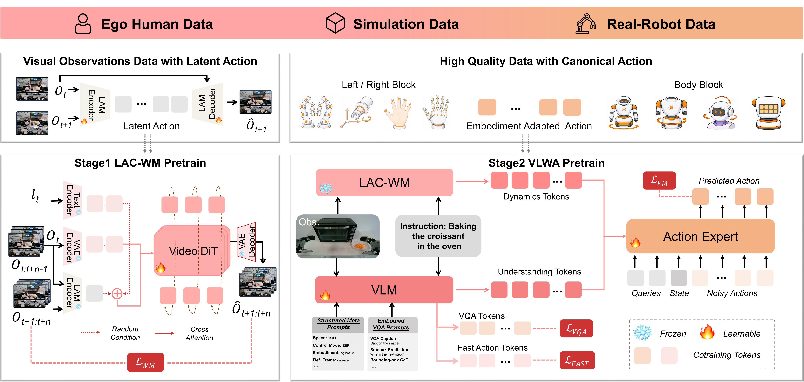
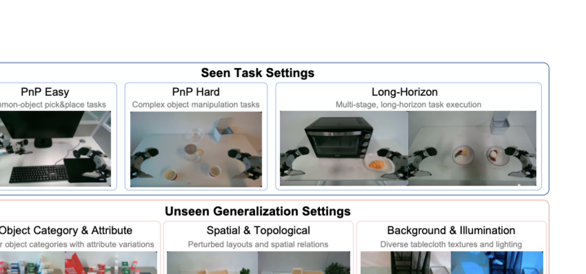
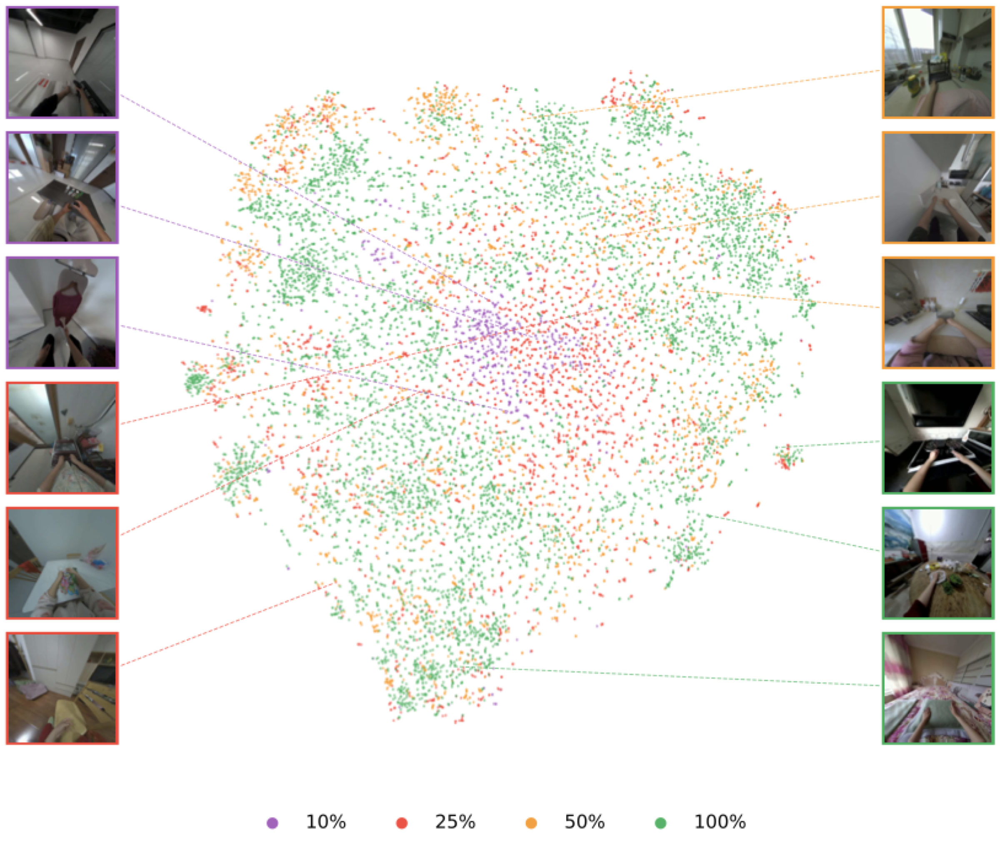
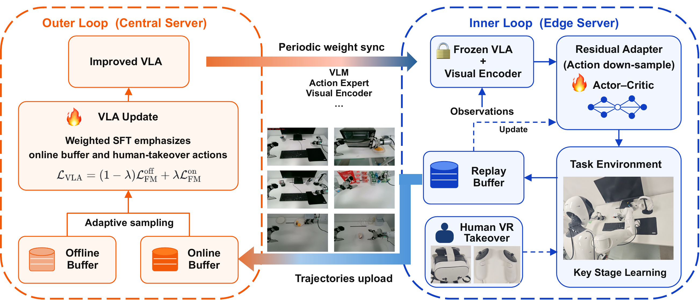

LAC-WM pretraining
Latent actions inferred from visual transitions turn action-free video into supervision for learning transferable physical dynamics.
Scaling Robot Manipulation Learning via Dual Action Alignment
JoyAI-RA 0.5 is a generalist Vision-Language-World-Action framework that turns action-free video and incompatible trajectories into complementary supervision for executable robot control.
JoyAI-RA 0.5 couples physical world-dynamics priors with visual semantics. Implicit alignment turns action-free video into dynamics supervision; explicit alignment grounds reliable human and robot trajectories in a shared physical action space.
The framework combines a VLM for task semantics, a frozen LAC-WM for learned physical-dynamics priors, and a flow-matching action expert that fuses both streams into continuous action chunks.

Action-free visual experience for transferable physical dynamics.
Action-bearing trajectories for controllable embodiment learning.
Target-robot grounding for physical execution and post-training.
Robot data is expensive. Human video scales, but it lacks executable actions. Simulation and robot trajectories carry actions, but their embodiments disagree. JoyAI-RA 0.5 uses two complementary channels to route each data source to the supervision it can reliably provide: latent dynamics or grounded physical actions.
Latent actions inferred from visual transitions turn action-free video into supervision for learning transferable physical dynamics.
Reliable human and robot trajectories are mapped into a shared 130-D action space while the frozen LAC-WM supplies dynamics features.
High-quality demonstrations adapt the VLM and action expert to the target robot, its observations, kinematics, and control interface.
Fast residual adaptation at the edge and asynchronous foundation policy updates improve task performance at two timescales.
The report evaluates six real-world scenarios across office, tea room, kitchen, dining table, pharmacy, and dressing table environments on the AgiBot G1 platform. Task score is reported on a 100-point scale from constituent subtask completion.

+23.8 points over π0.5
Leading overall generalization score
Across controlled studies, more egocentric video expands action diversity, improves learned dynamics, and yields a stronger policy initialization, with no observed saturation at the largest tested scale.

Seen task score improves from 83.13 to 97.50.
Unseen task score improves from 56.88 to 72.40.
Seen task score improves from 47.8 to 85.6.
Unseen task score improves from 37.6 to 60.2.
The inner loop rapidly learns a lightweight residual policy for the current task. The asynchronous outer loop incorporates accumulated interaction data into the foundation VLWA and periodically sends an improved model back to the edge.

The supplied project video is used throughout this first website build as a consistent demonstration placeholder for real-world manipulation scenarios.
Common-object pick-and-place and organization.
Fine contact, small objects, and accurate execution.
Sequential manipulation across longer task horizons.
Scaling Robot Manipulation Learning via Dual Action Alignment
Back to top ↑Dafeng Chi* · Peidong Liu* · Zhiyuan Xiang* · Sheng Xu* · Tianle Zhang* · Yuzheng Zhuang† · Dongwei Li · Bin Wang · Zhihao Yuan · Bowen Yang · Bo Lin · Mingyang Li · Wenhao Li · Zengjue Chen · Ao Li · Nan Duan · Liang Lin†
* Co-first authors · † Corresponding authors